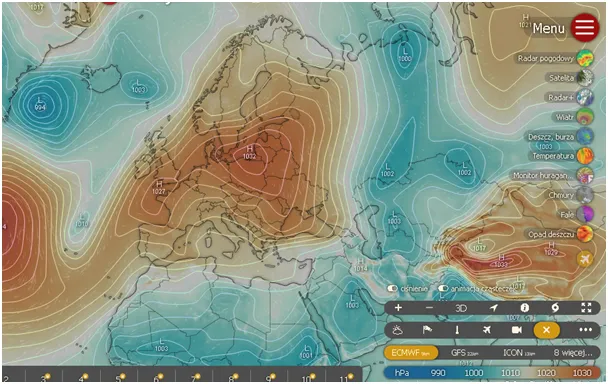
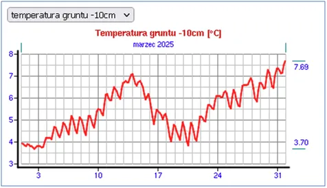
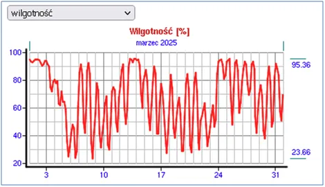
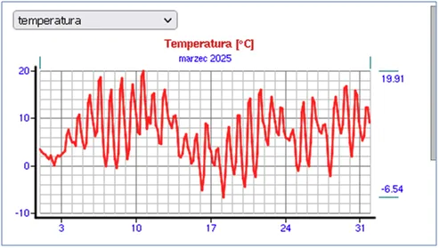

Para nas rozgrzewa
Bardzo szybko wróciliśmy do niskich temperatur mimo silnego Słońca – to skutek północnego powietrza, które wychładza grunt w nocy. Efekt jest spotęgowany przez czyste niebo, gdy cały mechanizm efektu cieplarnianego bierze w łeb z powodu braku pary wodnej w postaci chmur i wilgoci w powietrzu.
Doskonale ilustruje ten proces wykres temperatury gruntu na głębokości 10 cm z marca. Tuż obok niego widzimy drugi wykres, przedstawiający wilgotność. Można zaobserwować, że po 10 marca nawet w nocy wilgotność była bardzo wysoka, gdy osiągała 100%, pojawiał się deszcz. W tym okresie temperatura gruntu wzrosła z 4°C do 7°C. Dzięki temu, gdy wstawało Słońce i zaczynało ogrzewać teren, grunt ma już 3 stopnie gratis z poprzedniego dnia.



Po 17 marca nadszedł wyż i w nocy wilgotność spadła do 30%. Ziemia szybko wystygła, wracając do 4 st. C na głębokości 10 cm, a w płytszych warstwach – jeszcze bardziej. To sprawia, że poranki są chłodne, a przy stałym zimnym wietrze z północy nie da się skutecznie ogrzać całego układu: każde lekko nagrzane powietrze odlatuje na południe, a na jego miejsce napływa zimne z północy.
Warto zwrócić uwagę, że wilgoci w atmosferze przybywało wielokrotnie, a to ona jest odpowiedzialna w ponad 90% za zbawienny efekt cieplarniany, a mimo to nie spłonęliśmy w marcu!
Obecnie znów jesteśmy w centrum wyżu, więc nocą temperatura gruntu znacząco spada. Rano Słońce musi się sporo natrudzić, aby go rozgrzać, a dopiero później ciepło jest przekazywane powietrzu. Możemy mieć nadzieję, że przesunięta wiosna to też szybsi Zimni Ogrodnicy i maj w połowie miesiąca będzie ciepły.
Paweł Klimczewski